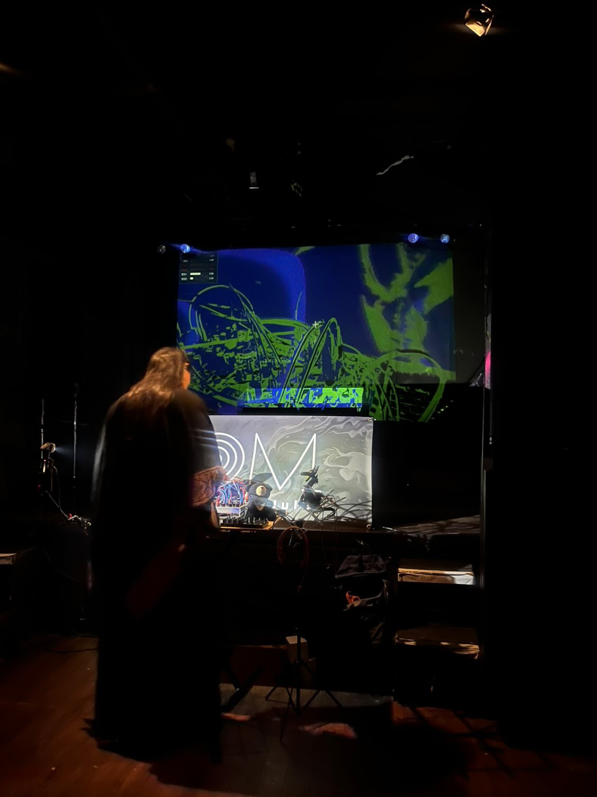
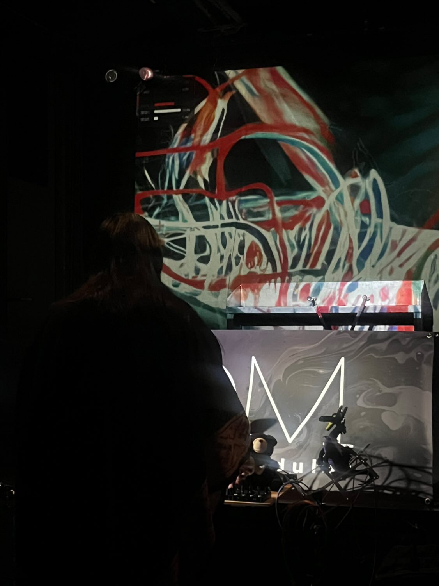
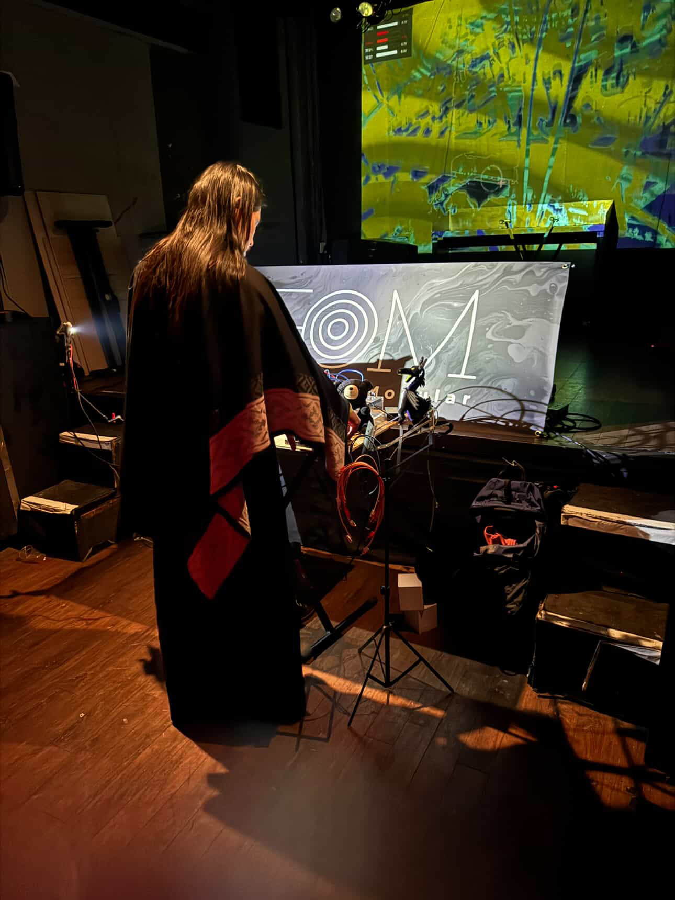

功能介紹
VAV（Vision-Audio-Visual System for Eurorack）是為模組化合成器設計的即時視覺/音訊整合系統。透過 DC-coupled 音訊介面，將攝影機輪廓偵測與音訊分析的結果輸出為 CV/Gate，回饋至 Eurorack 模組進行控制。
音訊端包含 4 軌混音器、立體聲 Delay、Granular 採樣、Reverb、Glitch 與 Chaos 調變。視覺端使用 OpenGL 即時渲染，可載入 4 張影像填入攝影機畫面四象限，並透過 Stable Diffusion Img2Img 進行即時 AI 生圖；Glitch Shader 提供 Region Tear / Scanline Jitter / Block Shuffle 三種破壞效果。
CV 輸出包含輪廓偵測驅動的 2 軌 CV 與 3 軌 Decay Envelope，所有控制項皆可透過右鍵 MIDI Learn 對應外部 MIDI CC / Note。



Demo
特色一覽
- 攝影機與音訊雙輸入，DC-coupled 介面送 CV/Gate 至 Eurorack
- 4 軌混音 + Stereo Delay / Granular / Reverb / Glitch / Chaos
- OpenGL 即時渲染 + 4 通道音訊反應視覺 + Glitch Shader
- Stable Diffusion Img2Img 即時 AI 生圖
- 輪廓驅動 2 軌 CV + 3 軌 Decay Envelope
- 右鍵 MIDI Learn 任意控制項（CC / Note Toggle）
技術資訊
- 平台
- macOS 12+
- 開發語言
- Python 3.11+
- Visual
- OpenGL + Stable Diffusion Img2Img
- Audio / CV
- DC-coupled audio interface (CV / Gate)
- Source
- GitHub